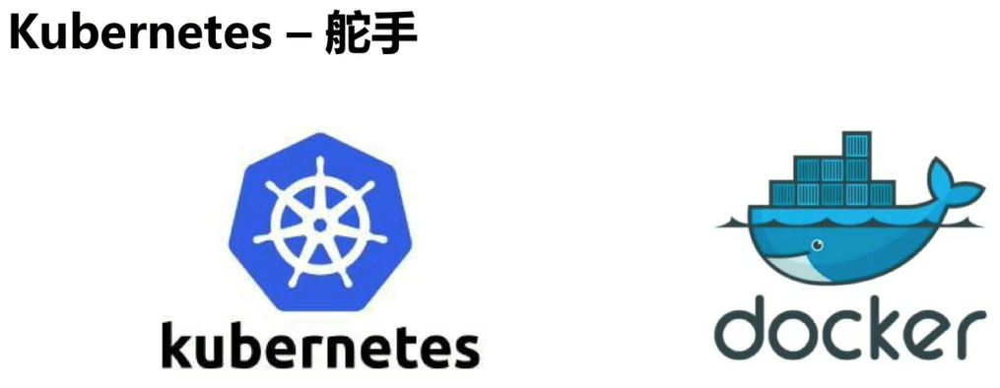
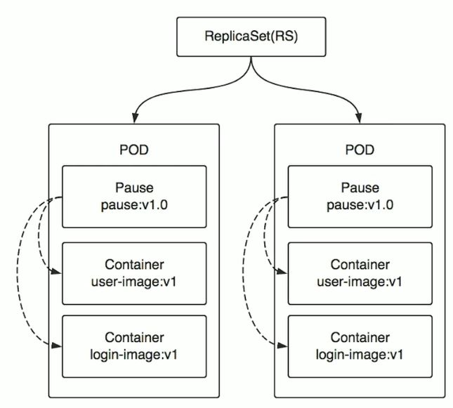
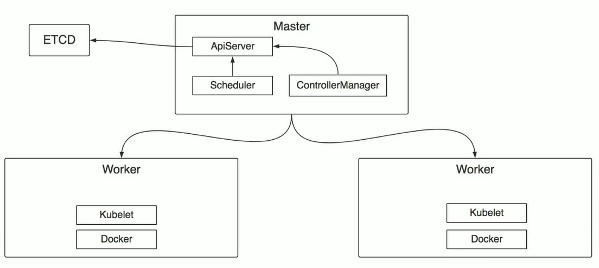
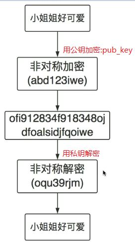
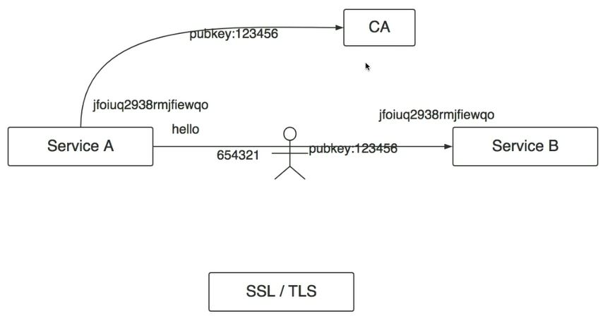

Kubernetes 简介


主要特征
- 以服务为中心: 不关心服务运行的环境和细节，所以构建在kubernetes上的系统可以部署在物理机、虚拟机、公有云、私有云，在什么地方运行都是无差别的.
- 自动化: 在kubernetes里的系统可以自动扩缩容、自动升级、更新、部署. 比如:
- K8s收到某个指令后，会触发调度流程，选中目标节点，部署或者停止响应服务.
- 如果有新的pod启动，会被自动加入负载均衡器，自动生效
- 服务运行过程中，K8s会定期的检查它们的实例数，以及这些实例的状态是否正常，当发现某个实例不可用的时候会自动销毁不可用的实例然后重新调度一个新的实例，以上所有都是自动化完成，不需要人工参与.
架构
Kubernetes VS Docker
K8s可以看成是Docker的上层架构, 就像是javaee和java的关系,Java是一问语言，J2EE是Java语言的一门使用技术，Java为J2EE提供了库和语法，J2EE使用Java的库和语法应用在WEB上。这是概念性的区别。
- Java SE（Java Platform，Standard Edition）。Java SE 以前称为 J2SE。它允许开发和部署在桌面、服务器、嵌入式环境和实时环境中使用的 Java 应用程序。Java SE 包含了支持 Java Web 服务开发的类，并为 Java Platform，Enterprise Edition（Java EE）提供基础。
- Java EE（Java Platform，Enterprise Edition）。这个版本以前称为 J2EE。企业版本帮助开发和部署可移植、健壮、可伸缩且安全的服务器端 Java 应用程序。Java EE 是在 Java SE 的基础上构建的，它提供 Web 服务、组件模型、管理和通信 API，可以用来实现企业级的面向服务体系结构（service-oriented architecture，SOA）和 Web 2.0 应用程序。
- Java ME（Java Platform，Micro Edition）。这个版本以前称为 J2ME。Java ME 为在移动设备和嵌入式设备（比如手机、PDA、电视机顶盒和打印机）上运行的应用程序提供一个健壮且灵活的环境。Java ME 包括灵活的用户界面、健壮的安全模型、许多内置的网络协议以及对可以动态下载的连网和离线应用程序的丰富支持。基于 Java ME 规范的应用程序只需编写一次，就可以用于许多设备，而且可以利用每个设备的本机功能。
K8s是以Docker技术的标准为基础去打造一个全新的分布式架构系统，K8s不是一定要依赖Docker，Docker是一个产品，而Docker技术是一些列的标准，只要实现了这些标准的产品都可以替代Docker，所以说K8s在底层可以支持它自己的容器技术并且经过Google的持续优化，号称在某些方面做得比Docker更加优秀，所以用不用Docker可以自己选择.
核心概念

Label 标签
POD，Deployment，Node等都可以打标签启到标识作用.
POD (可以称为实例)
- 所有的服务，所有的应用最终都是跑在Pod中,Pod是Kubernetes概念中最小的单元，可以理解为是Kubernetes的一个原子.
- POD 里面可以有一个或多个容器，
- POD里面所有的容器都是运行在一台机器上
- POD里面的容器共享网络，有一个唯一的IP
- POD里面都会有一个容器叫做Pause容器
- 有特定的image镜像比如pause:v1.0
- 作为根容器，把POD里其它的容器都link到一起，当我们的业务里面有两个或多个容器关系非常紧密，这时候就可以考虑把它们放到同一个POD里
- 负责整个POD的健康检查，然后汇报给K8s

Pod 通讯
- Pod内容器之间通讯: 通过localhost加上端口就可以访问.

- 同一个Node上不同Pod之间的通讯: 同一个Node上的Pod，它们默认的路由都是Docker0，都关联在同一个Docker0网桥，地址网段是相同的，它们之间可以直接通过网桥进行通讯，访问方式是可以通过 Pod IP 直接进行访问.

不同Node不同Pod直接通讯: Pod的IP不能冲突，Pod的IP和Node的IP关联起来，通过关联让Pod之间可以通讯.
Service

Pod具体运行在某个Node上
Service在Pod外再包一层IP
当某个Pod提供服务出现问题，会在其它地方再启动一个Pod和新的Pod的IP，我们还可以通过Service IP找到新的Pod
上面2台Node，3个Pod可以看做同一个应用的多个副本，对一个应用进行扩容，从一个实例扩成三个实例对外提供相同服务
Service除了上面可以定位到Pod地址外还可以对Pod地址进行负载均衡，比如轮训访问每个Pod
Pod也不一定是一模一样的，也可以是同一个应用的不同版本
通过什么方式来确定哪些Pod是一个Service? 怎么定位哪个Pod或哪几个Pod属于某个Service?
Kubernetes使用的是Laber Selector
通过配置好的Service的Select()，选择标签然后自动寻找POD, Service 对外有一个ClusterIP(Kube-proxy)，其它服务或者Client客户端就可以通过ClusterIP访问到这个Service，进而访问到最底层的POD服务
ReplicaSet(RS)副本集 (副本集这一层运行的程序可以称为应用)
RS是POD的上一层, 管理关联POD，如果应用运行过程中某个POD出现了异常或异常退出，RS就会保证副本始终为R，会在另一台机器重新调度一个POD
Deployment
- 扩容: 如对一个应用(Pod)扩容，把1个Pod扩容成四个实例，扩容的是Pod而不是Service, 4个Pod拥有相同标签，ServiceIP不变并对这4个Pod实行负载均衡
- 滚动更新: 一个旧的应用(RS这一层)运行了两个实例(两个POD), 更新这个应用的时候，Deployment会自动帮我们创建一个RS，并且滚动的先启动一个新版本的不改变服务的POD, 修改的可能是image(login-image:V1->V2),这时候Deployment管理的是三个实例(3个POD)，新的POD启动完成，健康检查结束，会停掉原来的POD并删掉，然后RS会再新建一个与另一个旧版本提供相同服务的POD，然后停掉另外一个旧版本POD，旧版POD停掉之后Deployment会清理掉管理旧版本的RS, 服务更新完成.

架构设计

密码学原理
- 对称加密:

- 非对称加密:

服务之间通信加密:

非对称加密非常复杂，不管是加密还是解密都非常耗时， 如果每次通信都进行非对称加密性能损耗是无法接受的
对称加密性能非常高，因此考虑把两者结合在一起来通信
- Server B 公开了自己的公钥pub_key, 任何人都可以看到
- 第一次通信，Server A 用Server B的pub_key 加密自己的秘钥，把秘钥变成密文，然后发到Server B，除了Server B可以用自己的私钥解密看到是对称加密的秘钥，中间黑客因为没有Server B的私钥因此无法解密, Server B 就知道要跟 Server A 进行对称加密的通信，并且使用的就是这个秘钥
- 之后通信, Server A就可以用发送给Server B 的秘钥对要发送的信息使用对称加密算法进行加密变成密文，然后发送给Server B， Server B收到信息后再用第一次拿到的秘钥进行对称加密算法解密.
- 上面的就是 SSL/TLS 协议， https底层就是通过这两个协议进行通信.
- 上面有个不完美地方，Server B公开pub_key， 黑客截获后再把黑客自己Server的pub_key发送给Server A, Server A拿着这个pub_key加密了自己的私钥，之后又被黑客截获并解密，虽然这些工作对黑客来说很复杂，但这种情况是有可能发生的.
- 解决方法: CA 证书认证机构，一个中间商，给所有Server颁发证书,所有正常网站的证书都在这一个地方存储，当Server A 拿到 pub_key之后会向 CA 查询这个公钥是不是合法的是不是可以信任的，CA会查自己的数据库这个pub_key是哪个公司的，它的域名是什么，包括所有人是谁等各种信息在CA都有备案，CA告诉Server A这个pub_key是我颁发的没有问题，Server A再拿着这个公钥去通信, 有时候我们访问一些网站时候，https会显示红色警告，这就说明这个网站的证书不是通过CA认证过的，一般是自己生成的.
服务发现
- Kube-proxy(ClusterIP)： 为Pod创建虚拟IP，只能在集群内部访问，并且是固定的, 只要Service不删除，这个IP是不变的.
- Kube-proxy(NodePort): 在每个Node上都启一个线程端口，把服务暴露在节点上，这样就可以让集群外的服务通过Node IP 和 NodePort去访问集群内的服务.
- Kube-DNS: Kubernetes的一个插件，负责集群内部的DNS解析，目的是让集群内部的Pod之间通过名字去访问
环境搭建
- 官方推荐使用Kubeadmin进行方便快捷的搭建.
- 网上找的个人搭建的Kubernetes, 在绿色网络环境下安装kubernetes集群，并在安装过程中加深对Kubernetes组件以及架构的理解.
Download & Install
官网步骤: https://kubernetes.io/docs/tasks/tools/install-kubectl/
机器配置
搭建K8s集群只用了一台安装Ubuntu18.04的酷睿机器.
- Ubuntu18.04宿主主机上 download & install virtualbox
$ apt-get install virtualbox- 下载Ubuntu18.04镜像: http://releases.ubuntu.com/18.04/ 选择 ubuntu-18.04.4-live-server-amd64.iso 2020-02-03 18:36 870M Server install image for 64-bit PC (AMD64) computers (standard download)
- 用virtualbox安装两台Ubuntu18.04虚拟机
- 虚拟机server01 作为 master;
- 虚拟机server02 作为 worker01;
- 宿主主机 作为 worker02
每台虚拟机 内存要大于等于 2 G ，CPU核数需要大于等于 4 核
每个node都在 /etc/environment 添加如下信息
http_proxy=”http://child-prc.intel.com:913/"
https_proxy=”http://child-prc.intel.com:913/"
ftp_proxy=”ftp://child-prc.intel.com:913/"
no_proxy=”K8S_MASTER_IP,K8S_MASTER_HostName” 如: no_proxy=”10.67.108.200,hci-node01” // [iotg@hci-node01 ~]$
kubeadm, kubelet, kubectl
每台机器都安装kubeadm(二进制文件工具), kubelet(服务), master上安装kubectl(二进制文件工具), 也可以在需要kubectl控制k8s资源的node上也安装(也就是下载或拷贝)kubectl二进制文件工具.
$ sudo apt-get update && sudo apt-get install -y apt-transport-https gnupg2
$ curl -s https://packages.cloud.google.com/apt/doc/apt-key.gpg | sudo apt-key add -
$ echo "deb https://apt.kubernetes.io/ kubernetes-xenial main" | sudo tee -a /etc/apt/sources.list.d/kubernetes.list
$ sudo apt-get update
$ sudo apt-get install -y kubectl
$ sudo apt-get install -y kubeadm
$ sudo apt-get install -y kubelet
$ kubeadm version // 通过 kubectl 命令行客户端向运行在主节点上的 Kubemetes API 服务器发出 REST 请求以与集群交互
$ kubectl version // 客户端工具
$ kubelet --version // kubelet是一个服务，可通过systemctl restart kubelet重启服务，每台master和worker节点都需要安装
$ systemctl enable --now kubelet
$ kubeadm reset
$ sudo hostnamectl set-hostname master-node //修改机器名字, 重开终端就可以看到机器名变了机器环境配置
关闭交换区, K8s认为swap性能开销比较大, 性能会大幅降低, 使用swap做云基础架构会减少性能, 因此k8s关闭swap
另外重新装系统OS时候就可以不给swap分配分区.
$ swapoff -a // 临时关闭交换区，$ free -h 可以查看 Swap: 0B...
$ vim /etc/fstab // 设置重启后自动关闭swapoff, 将含有swap的那一行前面加"#"注释掉就可以了
/dev/mapper/centos-swap swap swap defaults 0 0
$ sed -i '/swap/d' /etc/fstab //永久关闭
关闭防火墙
$ systemctl stop firewalld.service
$ systemctl status firewalld.service // 查看防火墙是否有 Active: inactive (dead) since......
$ systemctl disable firewalld // 设置开机不启动防火墙
$ sysctl net.bridge.bridge-nf-call-iptables=1
$ sysctl net.bridge.bridge-nf-call-ip6tables=1Iptables原理
linux的防火墙由netfilter和iptables组成
用户空间的iptables制定防火墙规则，内核空间的netfilter实现防火墙功能netfilter（内核空间）位于Linux内核中的包过滤防火墙功能体系，称为Linux防火墙的“内核态”
iptables(用户空间)位于/sbin/iptables，是用来管理防火墙的命令的工具，为防火墙体系提供过滤规则/策略，决定如何过滤或处理到达防火墙主机的数据包，称为Linux防火墙的“用户态”
关闭selinux: // 限制访问linux资源文件上下文
$ getenforce // 查看是否disabled
$ setenforce 0 //临时关闭selinux(Security-Enhanced Linux), 终端会输出"setenforce: SELinux is disabled"
$ vim /etc/selinux/config --> 将 SELINUX=permissive 改为 SELINUX=disabled, 设置重启后自动关闭selinux
$ sed -i 's/^SELINUX=enforcing$/SELINUX=permissive/' /etc/selinux/config //永久关闭(试了好像没反应): 同步系统时间
涉及到验证签发的证书的有效性, 如果签发证书的服务器时间比使用证书的服务器时间早, 就会导致校验不成功或证书错误, 一直等到使用证书的服务器时间也运行到证书开始生效的时间后才会解决这个问题.
$ ntpdate time.windows.com // 同步 windows 系统时间设置docker的proxy
$ mkdir docker.service.d
$ vim /etc/systemd/system/docker.service.d/http-proxy.conf
[Service]
Environment="HTTP_PROXY=http://child-prc.intel.com:913/"
Environment="HTTPS_PROXY=http://child-prc.intel.com:913/"安装镜像
$ docker images
$ docker pull gcr.io/google_containers/kube-apiserver-amd64:v1.9.3
$ docker pull gcr.io/google_containers/kube-controller-manager-amd64:v1.9.3
$ docker pull gcr.io/google_containers/kube-scheduler-amd64:v1.9.3添加机器到K8s集群
- 在Master主机 server01 上运行
$ kubeadm init返回部分数据如下
......
Then you can join any number of worker nodes by running the following on each as root:
kubeadm join 10.239.141.112:6443 --token uvm0zr.ndg144wcga276j16 \
--discovery-token-ca-cert-hash sha256:e1535452b32ed4039fa2f261197c0b91179fb168e8da3dd58b99fc11fe2213b8
root@server01:~#添加kubeadm部署k8s后生成的administrator访问证书到环境变量或~/.kube目录, 使得root或其它user登陆后可以通过kubectl访问或生成k8s资源如pod等, 有如下两种方式.
第一种:
$ export KUBECONFIG=/etc/kubernetes/admin.conf
$ echo "export KUBECONFIG=/etc/kubernetes/admin.conf" | tee -a ~/.bashrc
$ source ~/.bashrc第二种(其它user而非root登陆后需要做如下操作才能通过kubectl访问或生成k8s资源如pod等):
$ mkdir -p $HOME/.kube
$ sudo cp -i /etc/kubernetes/admin.conf $HOME/.kube/config
$ sudo chown $(id -u):$(id -g) $HOME/.kube/config添加容器之间的通信网络, 第三方资源weave, 官网上也推荐部署其它几种通信网络方式
$ kubectl apply -f https://cloud.weave.works/k8s/net?k8s-version=$(kubectl version | base64 | tr -d '\n')
- 之后用上面命令返回的 kubeadm join 10.239.141.112:6443 –t … 复制 并 在其它node机器(server02和宿主主机) 上运行就可以把node加进上面创建的Cluster了
在master server01 机器上查看集群节点信息
$ kubectl get nodes
$ kubectl get namespaces查看node节点信息
$ kubectl describe node server02重新(reset)在原来(机器上搭建k8s集群操作
主机名和IP解析, 通过主机名访问机器, 修改下各个节点 /etc/hosts 文件内容(实验环境没有修改，跳过这个步骤), 也可以只在master上配置, 因为很多操作都是在master上执行
......
10.239.141.106 server01
10.239.140.184 server02
10.239.140.186 alpha
- 需要在master节点上执行
$ rm -rf /etc/kubernetes/pki/etcd/
$ rm -rf /var/lib/etcd
$ rm -rf $HOME/.kube
$ kubeadm reset
$ swapoff -a
$ setenforce 0
$ systemctl stop firewalld.service
$ sysctl net.bridge.bridge-nf-call-iptables=1
$ kubeadm init, 再用返回的 "kubeadm join..." 在其它节点执行
$ echo "export KUBECONFIG=/etc/kubernetes/admin.conf" | tee -a ~/.bashrc
$ source ~/.bashrc
- 在worker节点执行:
$ systemctl enable docker.service
$ kubeadm reset
$ swapoff -a
$ setenforce 0
$ systemctl stop firewalld.service
$ sysctl net.bridge.bridge-nf-call-iptables=1
$ systemctl daemon-reload // 重新加载 systemctl 的配置文件
$ systemctl restart kubelet
// $ iptables -F && iptables -t nat -F && iptables -t mangle -F && iptables -X // will reset iptables
$ kubeadm join ......
- 再次在master节点上执行
如果不执行下面命令安装weave pod, kube-system命名空间下的coredns会一直处于containercreating状态.
$ kubectl apply -f https://cloud.weave.works/k8s/net?k8s-version=$(kubectl version | base64 | tr -d '\n')k8s重新生成token
主机上执行如下命令，主机IP:10.239.140.186
$ kubeadm token create
v6rgnu.ydqgkuujayykkanv
$ kubeadm token list
TOKEN TTL EXPIRES USAGES DESCRIPTION EXTRA GROUPS
v6rgnu.ydqgkuujayykkanv 23h 2020-05-30T13:24:41+08:00 authentication,signing <none> system:bootstrappers:kubeadm:default-node-token
$ openssl x509 -pubkey -in /etc/kubernetes/pki/ca.crt | openssl rsa -pubin -outform der 2>/dev/null | openssl dgst -sha256 -hex | sed 's/^.* //'
be6606e3e081afc6f9785fbe0e129e048e5a2a5557cb2e7747d727edd20c6ed4用上面master主机上生成的token在worker节点执行如下命令:
$ kubeadm reset
$ swapoff -a
$ setenforce 0
$ systemctl stop firewalld.service
$ sysctl net.bridge.bridge-nf-call-iptables=1
$ sysctl net.bridge.bridge-nf-call-ip6tables=1
$ kubeadm join --token v6rgnu.ydqgkuujayykkanv --discovery-token-ca-cert-hash sha256:be6606e3e081afc6f9785fbe0e129e048e5a2a5557cb2e7747d727edd20c6ed4 10.239.140.186:6443Additional
重新reset K8s集群，然后kubeadm init遇到如下问题
问题1
[kubelet-check] The HTTP call equal to ‘curl -sSL http://localhost:10248/healthz' failed with error: Get http://localhost:10248/healthz: dial tcp [::1]:10248: connect: connection refused.
解决方法:
$ systemctl restart docker
$ rm -rf /etc/systemd/system/kubelet.service.d/*
$ systemctl daemon-reload问题2
Unable to connect to the server: x509: certificate signed by unknown authority
需要删除上一次部署后cp到~/.kube的证书文件, 再重新部署一遍k8s集群
$ rm -rf $HOME/.kube问题3
The connection to the server localhost:8080 was refused - did you specify the right host or port?
需要添加administrator访问证书
第一种:
$ export KUBECONFIG=/etc/kubernetes/admin.conf
$ echo "export KUBECONFIG=/etc/kubernetes/admin.conf" | tee -a ~/.bashrc
$ source ~/.bashrc第二种:
$ mkdir -p $HOME/.kube
$ sudo cp -i /etc/kubernetes/admin.conf $HOME/.kube/config
$ sudo chown $(id -u):$(id -g) $HOME/.kube/config问题n
https://istio.io/docs/examples/bookinfo/
Istio 部署bookinfo 到bookinfo命名空间， 发现只部署了svc，RS，但是没有部署pod.
$ kubectl apply -f samples/bookinfo/platform/kube/bookinfo.yaml -n bookinfo用以下命令可以查看出错信息, 发现是webhook相关错误
$ kubectl describe rs/RS-NAME -n bookinfo解决方法是注释掉kubernetes的proxy
/etc/kubernetes/manifests/kube-apiserver.yaml
env: // K8s安装会用系统的proxy，加#注释掉.
#- name: HTTP_PROXY
# value: http://child-prc.intel.com:913
#- name: https_proxy
# value: http://child-prc.intel.com:913
#- name: http_proxy
# value: http://child-prc.intel.com:913
#- name: HTTPS_PROXY
# value: http://child-prc.intel.com:913
- name: no_proxy
value: 10.239.140.186,10.239.140.200 // master和一个worker节点的NodeIP.稍等一会$ kubectl get po -n bookinfo 就可以看到pod慢慢部署成功了.
转载请注明来源，欢迎对文章中的引用来源进行考证，欢迎指出任何有错误或不够清晰的表达。可以在下面评论区评论，也可以邮件至 jaytp@qq.com